사진을 누르면 개별 설명으로 이동합니다. 선택: 03 공간감 · 05 간결한 흐름 · 19 기술적 분해
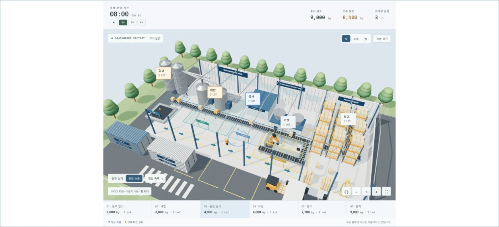
01 입체 미니어처 업무 공간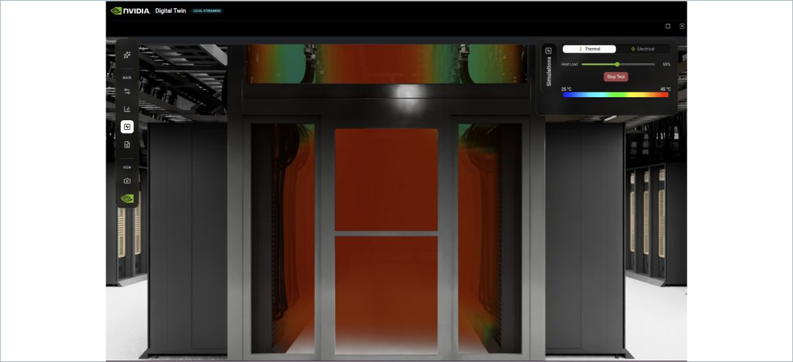
02 3D 공간 + 상태 오버레이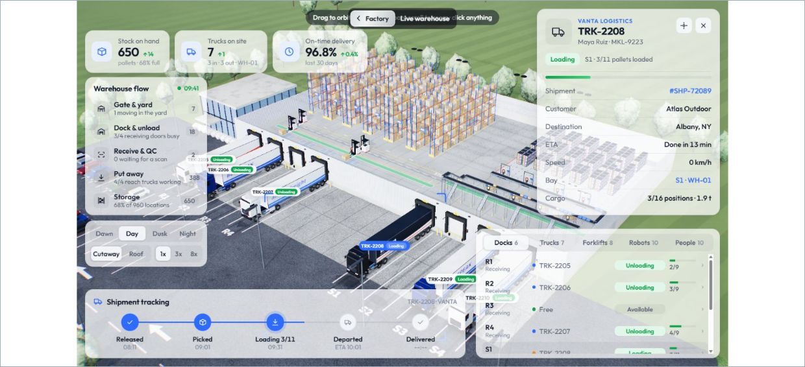
03 넓게 내려다보는 물류 미니시티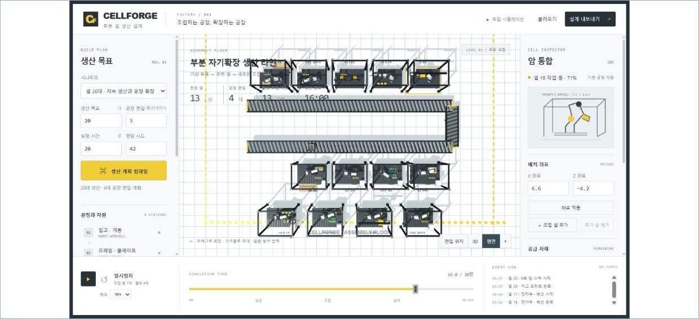
04 평면 배치 + 대상 인스펙터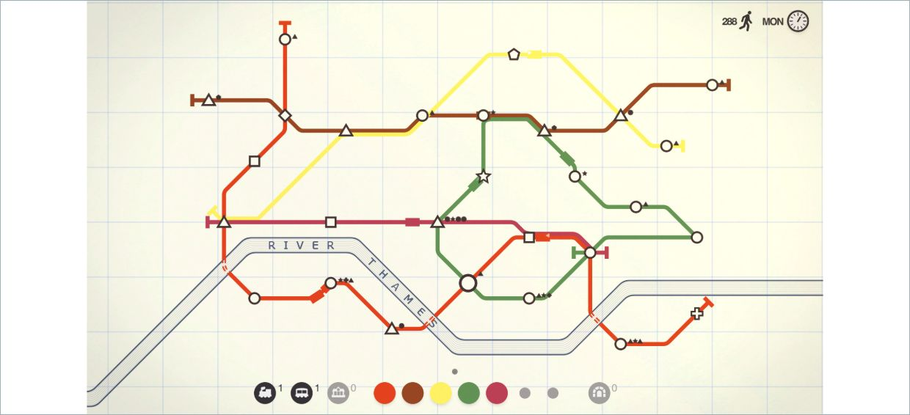
05 도형과 노선으로 읽는 업무 맵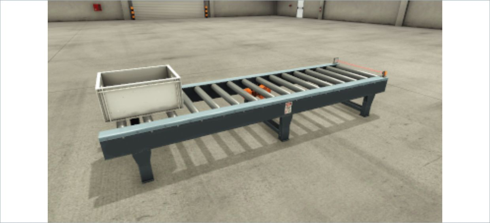
06 컨베이어를 따라가는 문서 흐름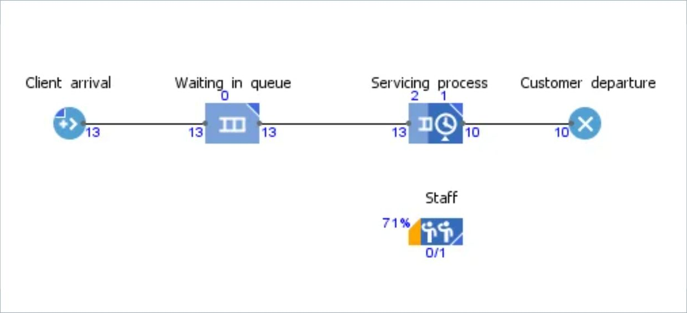
07 대기·분기를 보는 프로세스 모델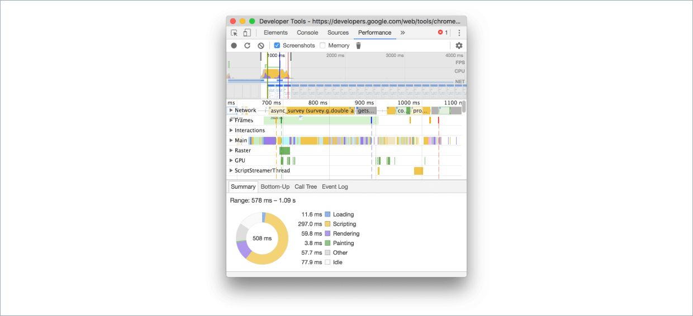
08 관제실처럼 보는 실행 타임라인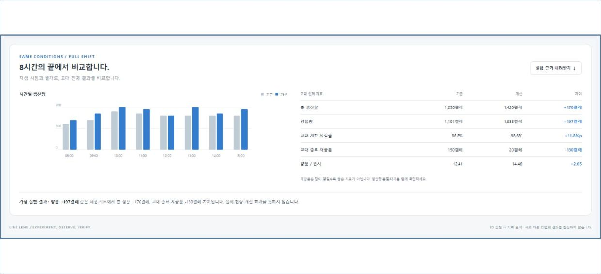
09 변경 전후를 나란히 비교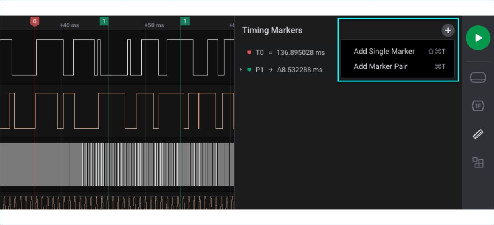
10 계측 장비처럼 보는 검증 트랙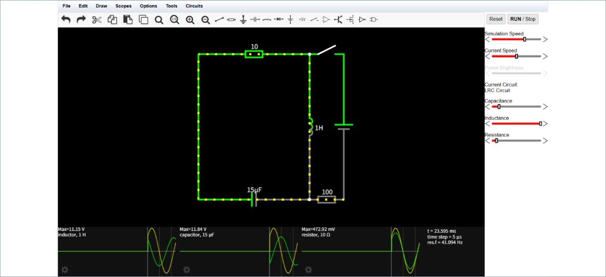
11 회로도처럼 잇는 검증 근거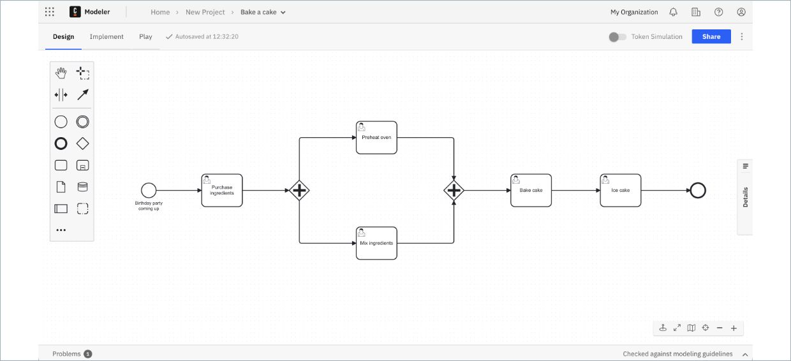
12 분기·병렬 처리를 보는 업무 모식도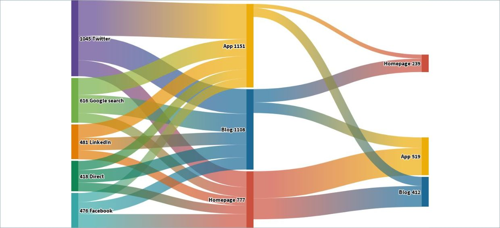
13 폭으로 읽는 문서 흐름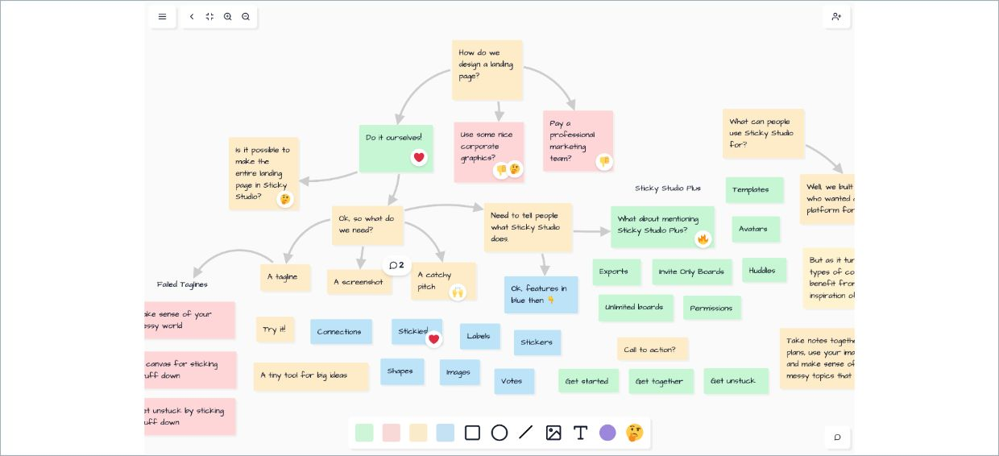
14 판정 근거를 잇는 관계 지도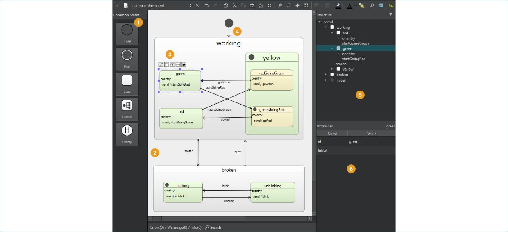
15 상태와 전이를 보는 검토 머신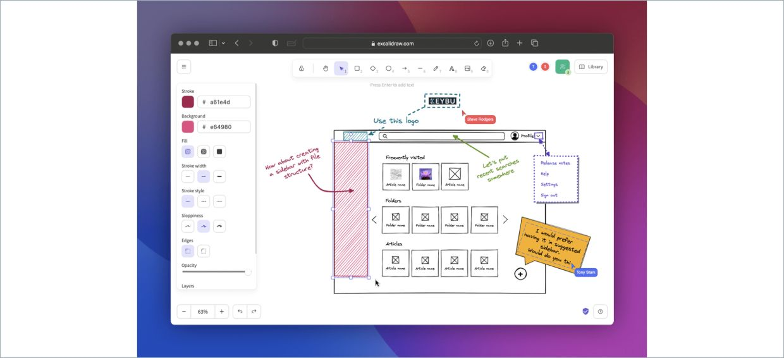
16 기술 화이트보드와 주석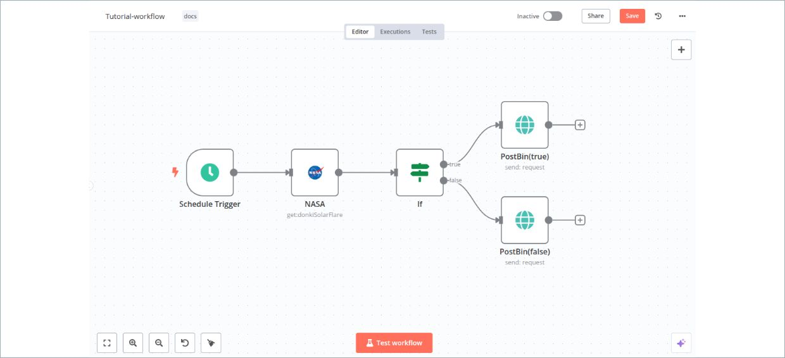
17 도구 실행을 펼치는 노드 캔버스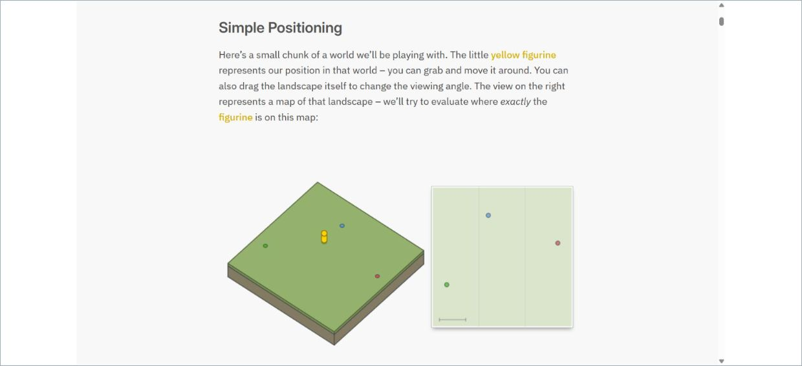
18 모식도를 조작하며 따라가는 설명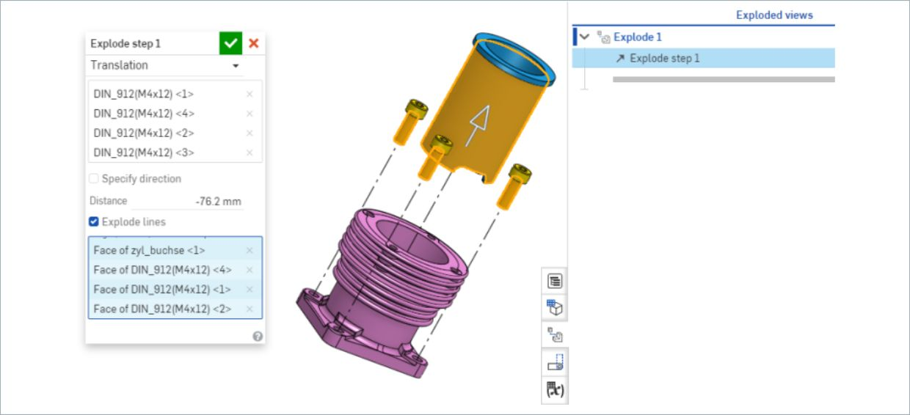
19 근거 층을 펼치는 기술 분해도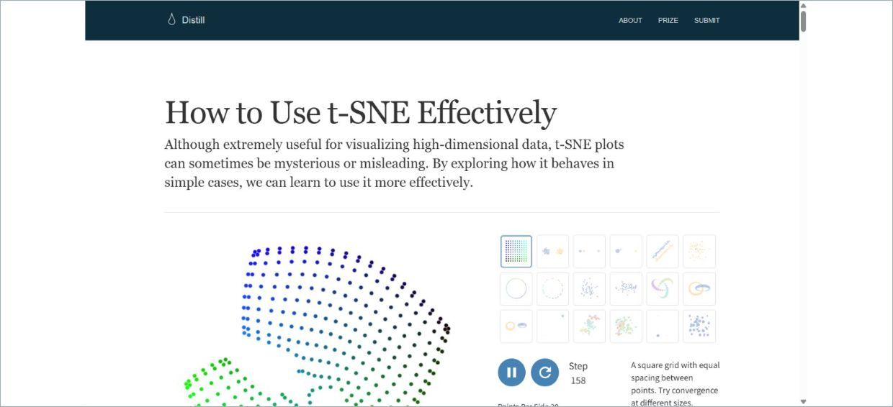
20 설명과 조작이 붙은 실험 노트